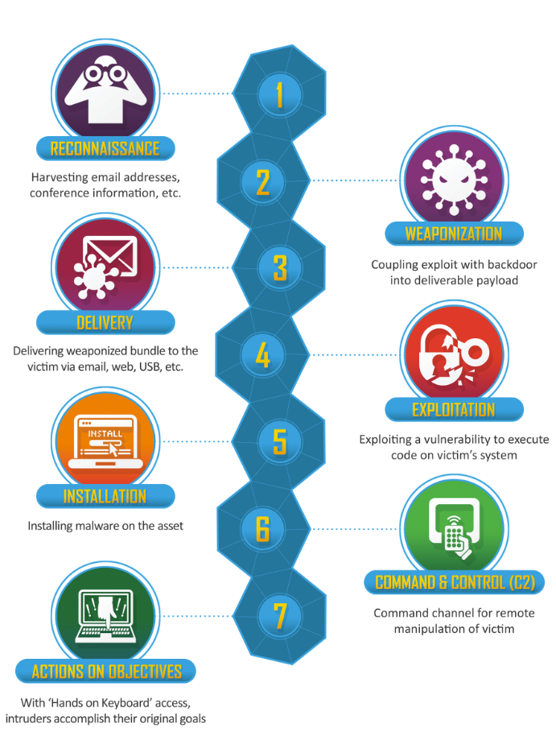

Cyber Kill Chain
The Cyber Kill Chain framework is a part of Lockheed Martin's intelligence-driven defense model for identification and prevention of cyber intrusions activity. The model identifies what the adversaries must complete in order to achieve their objective.
Stages of the Cyber Kill Chain
Reconnaissance: Adversaries research, identify and select targets, often using social engineering.
Weaponisation: Coupling a remote access malware with an exploit into a deliverable payload.
Delivery: Transmitting the weapon to the target via email, USB, etc.
Exploitation: The malware’s code triggers, which takes action on the target's network.
Installation: Installing a remote access tool or backdoor on the victim’s system.
Command and Control (C2): Controlling the target remotely by an external server.
Actions on Objectives: With "hands-on the keyboard" access, intruders accomplish their original goals.
Understanding each of these stages helps an organisation to detect and disrupt cyber attacks at various stages, improve their security posture, and implement an active defense.
Cyber Kill Chain Visualized
Implementing the Cyber Kill Chain
The implementation of the Cyber Kill Chain framework allows cyber security personnel to proactively fortify defenses and counteract each step of the attack chain. Through predictive analysis and by understanding the adversaries' tactics and techniques, organisations can effectively stop attacks and mitigate potential breaches.